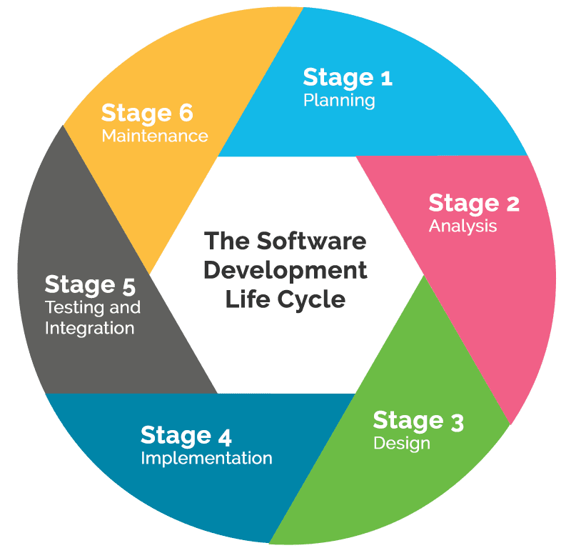

Planning -> Analysis -> Design -> Implementation -> Testing -> Maintenance
The software development cycle is a structured framework that are implemented in various ways across Software Engineering careers.
These methodologies helps with development's creation speed at a low effort costs. They organize tasks and helps maintaining project focus.
Since Software Engineers are the pioneers of programs and modern digital era, it is crucial to have a set of instructions to approach problem solving from issues never solved before.
There are multiple types of cycles that dev teams undertake, all of them with the core ideologies from above in mind.
First is the planning phase. Here, engineers checks for a project's main goals. They define the problem and think of possible solutions for that problem.
Secondly is the analysis phase. During this phase, software engineers coordinate with project owners to investigate requirements. They make sure to obtain detailled information and gather specifications on how the project should be build based on the owner's expectations.
Third is the design phase. Now that specific requirements and detailed expectations are set along with a possible solution in mind, engineers began designing how they will implement said solution.
Fourth is the implementation phase. With the design done, engineers began writing, compiling code and setting up necessary tools, such as databases if needed.
Fifth is the testing phase. Engineers proactively test all of their code, database, and stability of their newly-made solution. If everything seems to work, the project is deployed.
Lastly is the Mainentance phase. This is probably the longest phase since engineers needs to give maintenance every now and then to their project as code might get outdated over time. If modifications are needed, we go back to phase 1.
Examples: Agile methodology, Waterfall methodology, DevOps, and Kanban.
References.